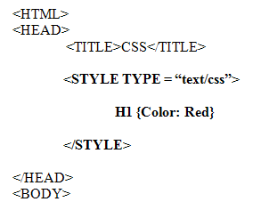
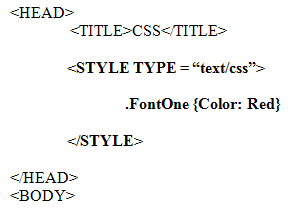
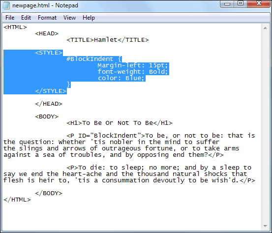
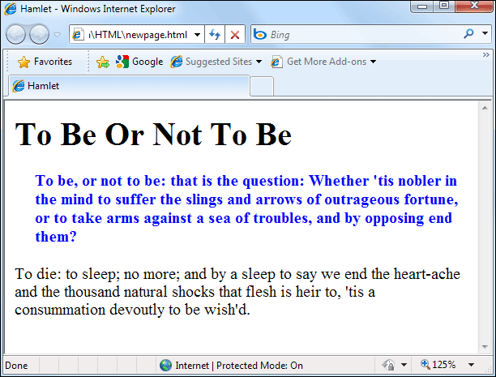

How to use CSS Class and ID Selectors
You have seen how to set up a stylesheet. And you know that if you set up a HTML selector, then all the HTML tags will have their values reset with the new values you specified. For example if you had this:

Then all the H1 headings you used between the two BODY tags would have the text between the two <H1> tags coloured red.
In other words, to use your new HTML selector, you don’t have to add anything else to your HTML code. Just use the tag in the normal way.
However, Class and ID selectors are slightly different.
Using Class Selectors
To set up a Class Selector, the code was this:
.ClassSelector {Property: Value}
First, you type a full stop (period). Then you type the name of your Class Selector (which can be anything you want). The Property and Value are then as normal. An example is this:

The .FontOne is the Class Selector, a name we made up ourselves. In between the curly brackets, we’re then saying “Every time this Rule is applied, the colour of the text will be red".
You can use this new Rule inside a normal HTML tag. Like this:
<H1 Class = "FontOne">My Heading</H1>
When applying your new Class Selector Rule, the word “Class” is used. You then type an equals sign ( = ), followed by the name you gave your Class Selector. In our case, this was FontOne. But note that the full stop (period) is now missing from the start of the selector name. If you put the full stop in, your Rule won’t work. Note that although we've used quote marks around the Class name, this is not strictly necessary. It is recommended, though.
Using ID Selectors
You use an ID selector in exactly the same way that you use the Class selectors. The only difference is in the word used when applying the Rule. Instead of Class you use ID:

This is what the above code would look like in a web page:

But that’s enough of the theory for now. Let’s get some practical work done. We’ll go through the various ways you can add a STYLE to your web pages using your text editor. The first code we’re going to write will centre a heading on a page. You can then use the same code to centre anything on your page. Click below to get started.